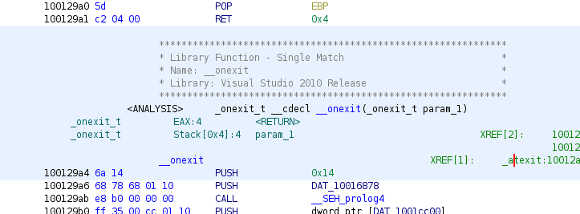

|  |
Function ID is an analyzer that performs function identification analysis on a program. For each function, the analyzer computes a hash of its body and uses this as a key to look up matching functions in an indexed database of known software. The recovered function name, and other meta-data about the library it is contained in, is applied to the program.
Function ID is suitable for identifying statically linked libraries or other software where the compiled form of the functions does not change. Because of the hashing strategy, functions remain identifiable even if the library is relocated during linking. Larger changes to the compilation process of the library however will likely prevent successful searches. Function ID databases are necessarily targeted to a specific processor.
Function ID generally runs as part of Auto Analysis but can also be initiated at any time by the user from the One Shot menu. Ghidra also comes with a Function ID Plug-in, which provides more control over which databases to apply, and allows users to create and populate their own databases.
By default, Ghidra ships with databases that search for statically linked libraries from Microsoft Visual Studio for the x86 processor. These have been broken apart into separate Function ID databases, based on 32-bit or 64-code and the version of Visual Studio. Within each database, there are a two library variants -- one for debug versions and one for production.
Function ID works by calculating a cumulative hash over all the machine instructions that make up the body of a function. For each function, two different 64-bit hashes are computed: a full hash and a specific hash. Both schemes hash the individual instructions of the function body in address order, but they differ in the amount of information they include from each instruction.
This hash includes the mnemonic and some of the addressing mode information from an instruction. Specific register operands are also included as part of the hash, but the specific value of constant operands are not.
This hash includes everything used in the full hash but may also include the specific values of any constant operands. A heuristic is employed that attempts to determine if the constant is not part of an address, in which case the value is accumulated into the hash.
Both hashes are used to identify matches in a database. The full hash is robust against changes due to linking; the specific hash helps distinguish between closely related variants of a function.
When Function ID examines a function, its parent and child functions are also considered as a way of disambiguating multiple matches. For example, suppose two functions have identical sequences of instructions, except they each call to a different subfunction. In this situation, the full hashes of the functions will be identical, but the system will try to match the hash of one of the two subfunctions, allowing it to distinguish between the two.
Within a Function ID database, functions are grouped into libraries, which are intended to be recognizable named software components that get linked into larger programs. A Library has the following meta-data.
This is a general descriptive name for the library.
If there is a formal version number for the library, this field will hold this value as a string.
Version information that cannot be encoded in the formal Version field can be encoded in this field. This is used typically for compiler settings, which affect Function ID hashes but don't make sense in a version string describing the source code.
Generally, the analyzer is able to report all three fields describing the library for any function match it finds. In the case where a database contains multiple versions of the same library, it's common for a function to match into two or more libraries that differ in their Version or Variant field. In this case, the analyzer will still report a single match but will leave off the fields it couldn't distinguish.
A Single Match for a function occurs under the following conditions:
Even if there are multiple potential matches in the database, the first condition may still hold because they all share the same base function name. The second condition does not need to apply if the "Always apply FID labels" option is toggled on (See “Analysis Options”). The number of instructions is computed as the match score and can include counts of instructions in parent or child functions. For details about the match score and thresholds, see “Scoring and Disambiguation”.
If there is a Single Match, the analyzer will:
Both the inserted comment and bookmark will include the phrase "Single Match".
If the analyzer is not able to narrow down to a single function name, even after applying all of its disambiguation logic, then the reporting behavior depends on the remaining match scores. If they are too small the matches are deemed to be random, and nothing is reported at all. Otherwise, a Multiple Match is reported. In this case, multiple symbols and comments will be inserted, one for each remaining match, up to an arbitrary limit. All the comments will contain the phrase "Multiple Matches".
This analyzer appears under the heading Function ID in the dialog listing the standard analyzers whenever the user elects to auto-analyze a new program upon import, or by selecting Auto Analyze under the Code Browser's Analysis menu. From this dialog, users can toggle whether the analyzer is active or not, and if Function ID is selected and toggled on, the dialog presents some configurable options for the analyzer.
This is the primary threshold a potential match must exceed in order to be reported by the analyzer. This defends against false positives caused by randomly matching small functions. Roughly, the score counts the number of instructions in the function plus instructions in any matching parent or child.
In general for a single function, if there are multiple potential matches all with different names, this is a good sign that the matches are random, and the analyzer will not report a match. But if the match score exceeds this threshold, the analyzer will report a Multiple Match. (See “Multiple Matches”)
If this toggle is on, the analyzer will report matches even if there is already an imported or user defined name for the function.
The analyzer will only create bookmarks for matches if this toggle is on. This does not affect insertion of comments and symbols.
The Function ID analyzer assigns a match score to each of the potential matches it discovers in its database. The score is used both to filter matches which are too small to be significant and to disambiguate between potential matches.
The basic unit of the score is a single matching instruction with no constant operands, which receives a score of 1.0. Certain instructions, such as calls and no operation instructions are assigned a score of zero. Constant operands, in the rare case that they match via the specific hash, contribute an additional 0.67 units per operand.
Once a potential match is discovered, it is assigned a score based on:
Once scores are assigned, potential matches are filtered based on the instruction count threshold (See “Analysis Options”). This helps prevent small functions that randomly match database entries from being reported. Note however that a small function can still be correctly reported if its parent or child functions also have matches, increasing its overall score. If there are still more than one potential match, the highest assigned score is used to filter out matches with lower scores.
If there are still multiple potential matches once thresholds have been applied to the match scores, the remaining matches will be grouped based on function names. If two potential matches share the same function name, they are grouped together. If the remaining matches can all be placed into a group sharing a single name, the result will still be reported as a "Single Match".
Function names are considered to match if their base names match. The base name is obtained by stripping off any namespace from the symbol plus any initial underscores. If the name is mangled, an attempt is made to demangle it first, then namespace and parameter information is stripped.